Results
Findings per model:
- PixelNeRF works best in scenes with texture and when 5+ views are available. Its CNN encoder allows for generalization, but performance drops with fewer views.
- SparseNeRF excels at preserving geometric structure from as little as one image. Its depth-based constraints help maintain consistent shape under occlusion.
- S3NeRF yields the highest quality results even with just 1–3 views, thanks to its attention-based fusion of multiple views and strong scene-specific priors.
- ZeroRF offers a flexible fallback for domains lacking training data, though it's computationally heavy and prone to blurry reconstructions with extreme sparsity.
Visual comparisons are shown below:
PixelNeRF vs SparseNeRF: Qualitative Comparison
Each row compares the same scene. Left: PixelNeRF | Right: SparseNeRF
1 View
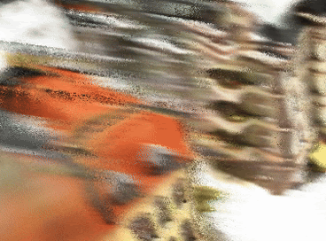
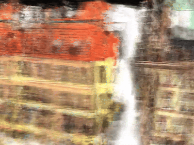
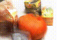
3 Views
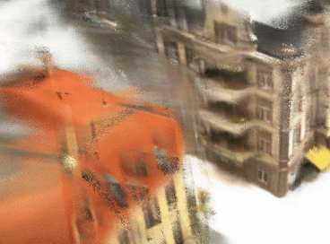
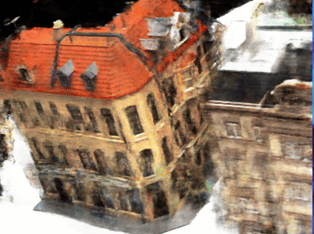
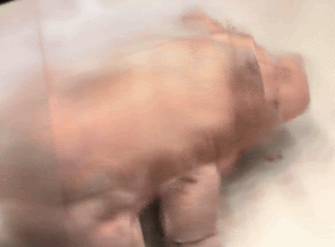
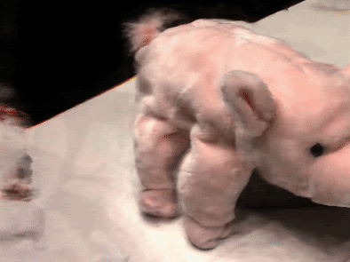
S3NeRF: Visual Results
Below are 4 examples of S3NeRF outputs under 3-view settings.
3 Views
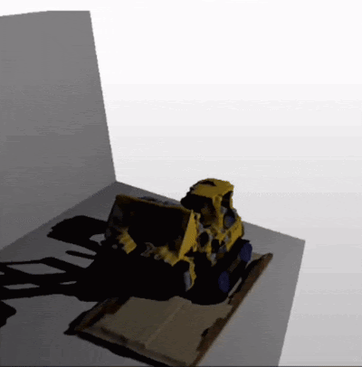
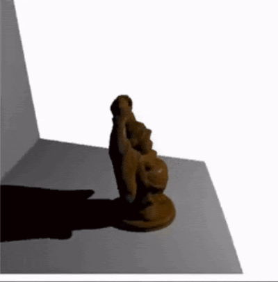
ZeroRF: Visual Results
ZeroRF uses a Deep Image Prior strategy that requires no pretraining but often struggles with fine detail in sparse-view setups.
1 View
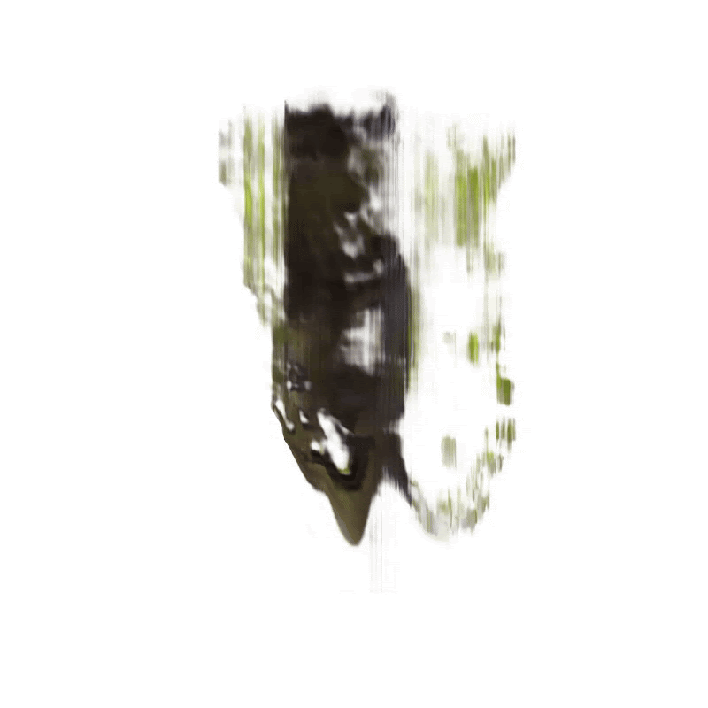
3 Views
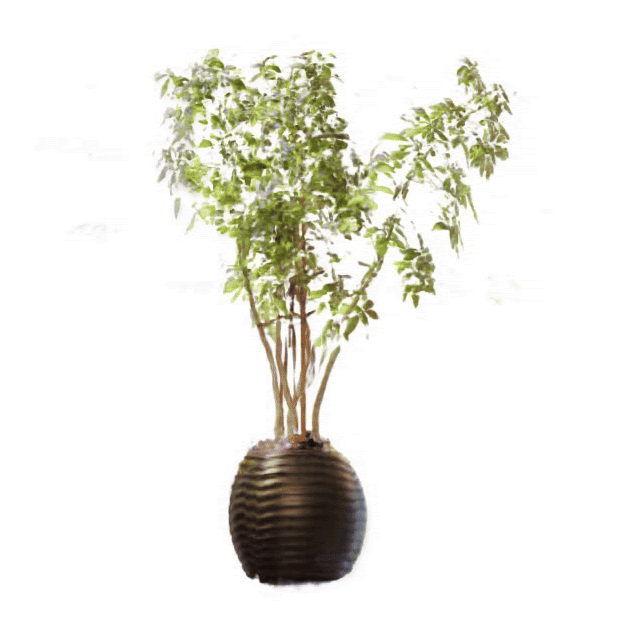
3 Views
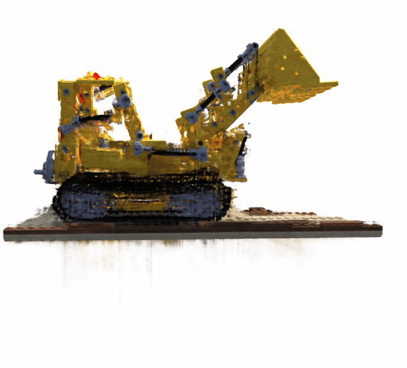
Analysis of Work
New Results
We provide the first unified benchmark of these models under consistent sparse-view settings. Our analysis uncovers the specific strengths and limitations of each approach across dataset types.
Meeting Goals
All primary goals were met:
- Comparing model performance under 1–9 views
- Evaluating quality using multiple perceptual and structural metrics
- Proposing a hybrid NeRF architecture
Future Work
We propose a hybrid model that combines:
- Encoder: Scene-agnostic CNN (PixelNeRF)
- Fusion: Cross-view attention (S3NeRF)
- Backbone: Factorized MLP with Deep Image Prior (ZeroRF)
- Geometry: Depth ranking and smoothness regularization (SparseNeRF)
Training this hybrid model with both photometric and perceptual loss functions is expected to provide high-fidelity reconstructions with only 1–3 input views.

Proposed hybrid NeRF model architecture
Explanation:
Our hybrid architecture brings together the strengths of four NeRF variants to enable high-fidelity reconstruction from sparse views (1–3 images).
1. Pixel-Aligned Encoding: A CNN encoder (inspired by PixelNeRF) extracts spatially aligned feature pyramids from each input image. These features retain local detail and structure, forming a learned scene-agnostic prior. Unlike latent-vector-based conditioning, this retains spatial richness and generalizes across novel scenes.
2. Cross-View Feature Fusion: To aggregate information across views, we project 3D points into each image and sample CNN features. Inspired by S3NeRF, we fuse these using a learnable attention-based or adaptive MLP module. This allows the model to weigh informative views more heavily (e.g. unoccluded regions) and promotes sharper geometry and textures in the final output.
3. Factorized Radiance Field Backbone: The radiance field is modeled using a factorized representation (e.g. low-rank feature grid) as seen in ZeroRF. A lightweight MLP refines these features and predicts color and density. Additionally, we use scene-specific latent codes to help adapt to each scene’s geometry and appearance. Combined with view-dependent fusion features, these are input to the NeRF decoder — either concatenated or injected midstream.
4. Geometry Regularization: To enforce physical plausibility, we incorporate depth-based constraints inspired by SparseNeRF. From predicted density, we derive depth maps and apply (i) local depth ranking consistency and (ii) spatial continuity regularization. These losses guide the model to learn coherent 3D structure across views and improve rendering fidelity, especially under occlusion or sparsity.
This proposed design reflects a conceptual synthesis of proven techniques and will likely require architectural and training-level refinements for practical use. Feedback is welcome!
References
-
Alex Yu, Vickie Ye, Matthew Tancik, Angjoo Kanazawa.
PixelNeRF: Neural Radiance Fields from One or Few Images. CVPR 2021.
PixelNeRF learns a scene-agnostic prior using a fully convolutional NeRF architecture that enables single or few-shot novel view synthesis without 3D supervision. It generalizes across scenes and categories on datasets like ShapeNet and DTU.
-
Guangcong Wang, Zhaoxi Chen, Chen Change Loy, Ziwei Liu.
SparseNeRF: Distilling Depth Ranking for Few-shot Novel View Synthesis. arXiv:2311.10902 [cs.CV], ICCV 2023.
SparseNeRF uses coarse or noisy depth maps from consumer sensors and applies depth ranking and spatial continuity constraints to enable few-shot novel view synthesis. It shows strong performance on LLFF, DTU, and the new NVS-RGBD dataset. -
Wenqi Yang, Guanying Chen, Chaofeng Chen, Zhenfang Chen, Kwan-Yee K. Wong.
S3-NeRF: Neural Reflectance Field from Shading and Shadow under a Single Viewpoint. arXiv:2305.07085 [cs.CV], NeurIPS 2022.
This method reconstructs full 3D geometry and BRDFs from single-view images lit under varying point lights. It leverages shading and shadows instead of multi-view photo-consistency and supports applications like relighting and novel view synthesis. -
Ruoxi Shi, Xinyue Wei, Cheng Wang, Hao Su.
ZeroRF: Fast Sparse View 360° Reconstruction with Zero Pretraining. arXiv:2312.09249 [cs.CV], CVPR 2024.
ZeroRF integrates a Deep Image Prior into a factorized NeRF framework to enable fast and generalizable 360° reconstruction from sparse views without pretraining. It achieves SOTA results on multiple sparse-view benchmarks.
Team Members
This project was created and developed by the following individuals in affiliation with Texas A&M University:
- Simran Jot Kaur
- Vinay Singh
Course: CSCE 689 ML FOR 3D VIS&GRAPHICS
Instructor: Prof. Wenping Wang